では、いよいよUbuntuをセットアップしていきましょう。
まずSSDとUSBをPCに挿し、PCを起動します。
メーカーロゴが表示されたら、すぐにF8キーまたはF11キーを押します。(使用するPCに合わせて、とにかくboot menuを開きましょう。)
するとboot menu が表示されるので、そこからkioxia~と書かれたUSBメモリを選択しましょう。
boot menuが実装されていないPCの場合は、BIOSの設定からboot diskを選択する必要があります。
その後GNU GRUBという画面が表示されるので、*Ubuntu (safe graphics)*を選択します。暫く待つとUbuntuが起動します。
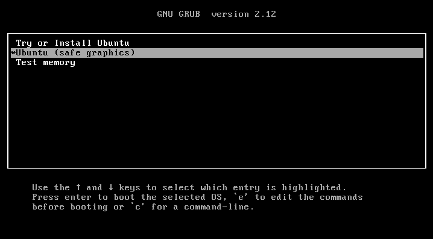
図1 GNU GRUB
Ubuntuが起動すると、Installerが自動的に起動します。Installerの指示に従ってインストール作業を行いましょう。初回は英語でインストールを行うほうが無難です。
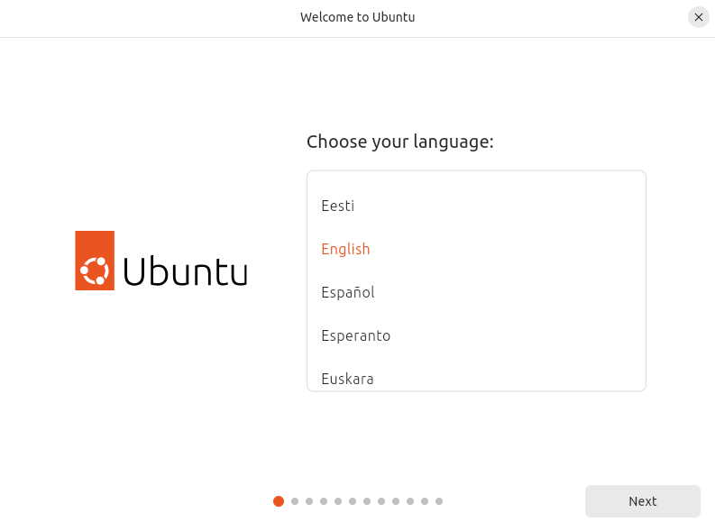
図2 Installer
アクセシビリティ機能の設定
もし必要な場合は各自で設定を行ってください。特に変更しない人はそのまま進みましょう。
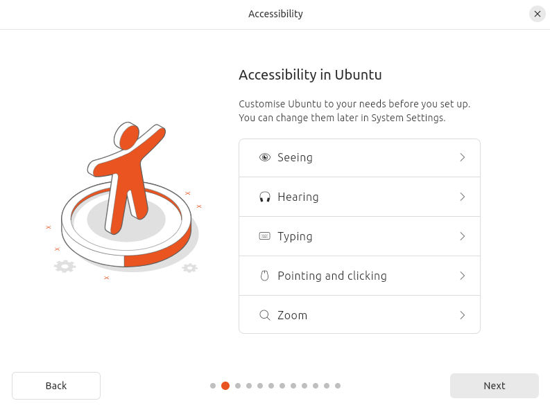
図3 アクセシビリティの設定
キー配列の設定
キー配列を日本語キーボード用に設定してください。US配列では記号のキー配置などが変更されています。
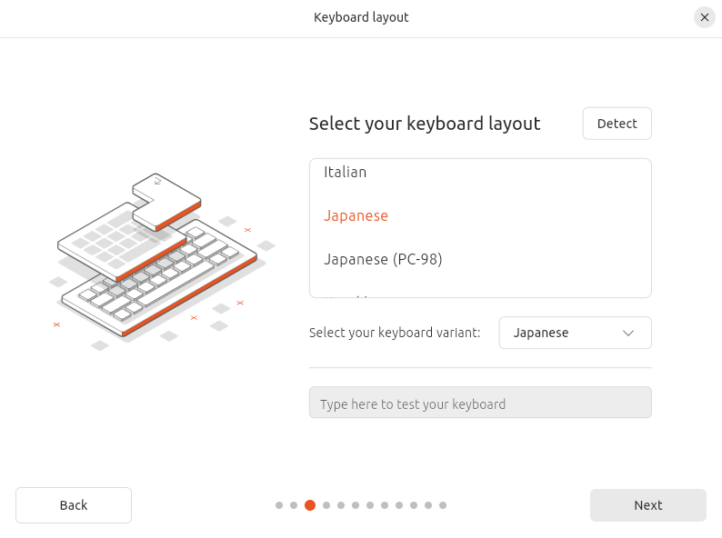
図4 キー配列設定
インターネット接続の設定
使用する環境に合わせてネットに接続しましょう。接続しなくてもインストールは可能です。
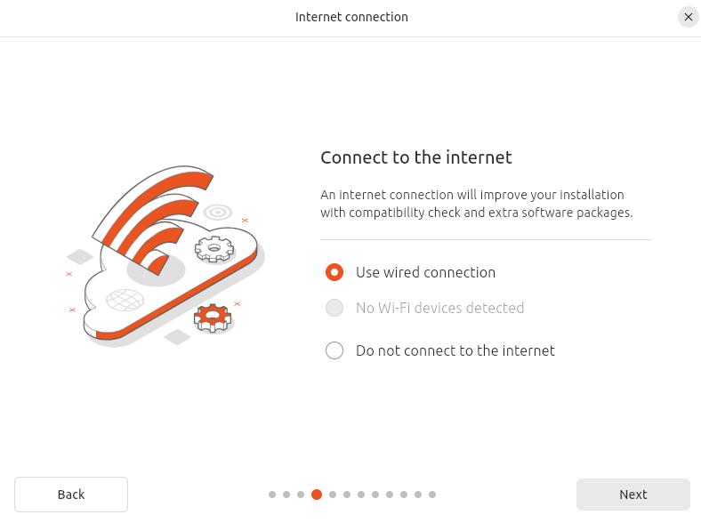
図5 インターネット接続の設定
アップデート
たまにインストーラにアップデートが来ていることがあります。
アップデートを行ってインストールしましょう。
アップデートが終了したら、デスクトップにあるインストーラを再び立ち上げて、ここまでの内容を再入力して次に進むことになります。
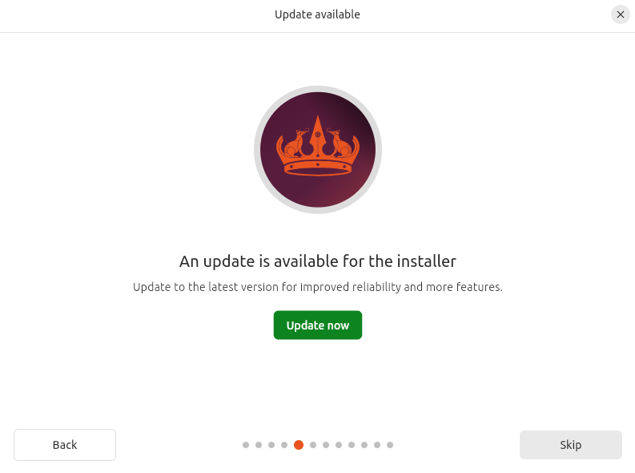
図6 アップデート
インストール方法の設定
自分で設定してインストールしたい！という人のための項目です。特にこだわらない人はそのまま進みましょう。
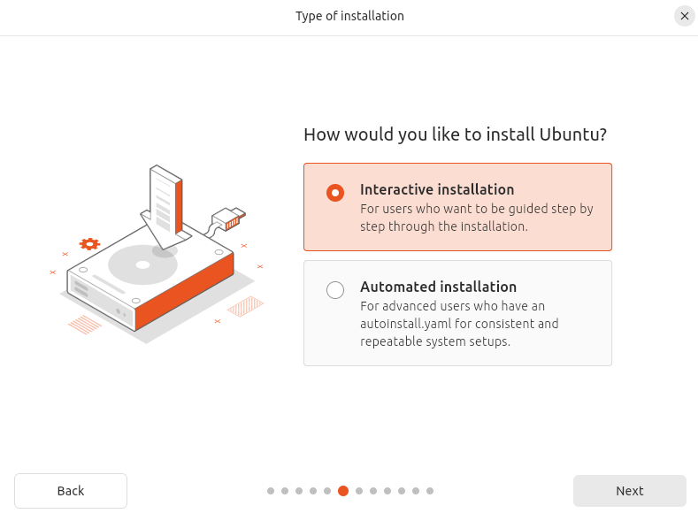
図7 方法の設定
ソフトウェアの設定
拡張ソフトウェアをインストールするかどうか聞かれます。24.04ではここでインストールしないと最低限のソフトウェアしか入りませんので、インストールをお勧めします。(わからない、設定が面倒という人は下図4と同じで大丈夫です。)
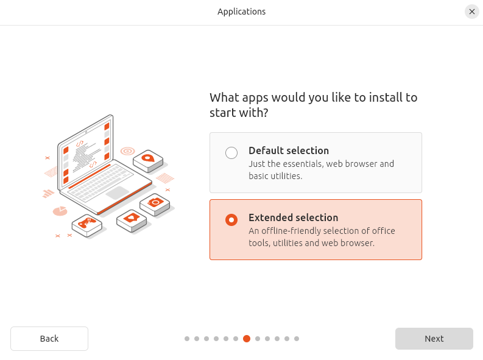
図8 ソフトウェアの設定
サードパーティのソフトウェアの設定
サードパーティのソフトウェアをインストールするかどうか聞かれます。お好みで選択してください。(わからない、設定が面倒という人は下図と同じで大丈夫です。)
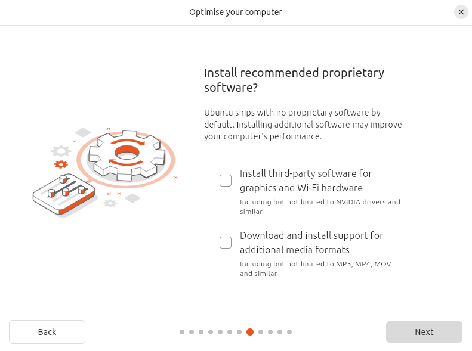
図9 サードパーティの設定
インストール先の設定
インストール先SSDを選択します。おそらく1つしかSSDを接続していないと思うので、そのSSDを用います。
※この時、SSDはインストール時にフォーマットして用いるようにしてください。（ただし上書きの場合はこの限りでない)
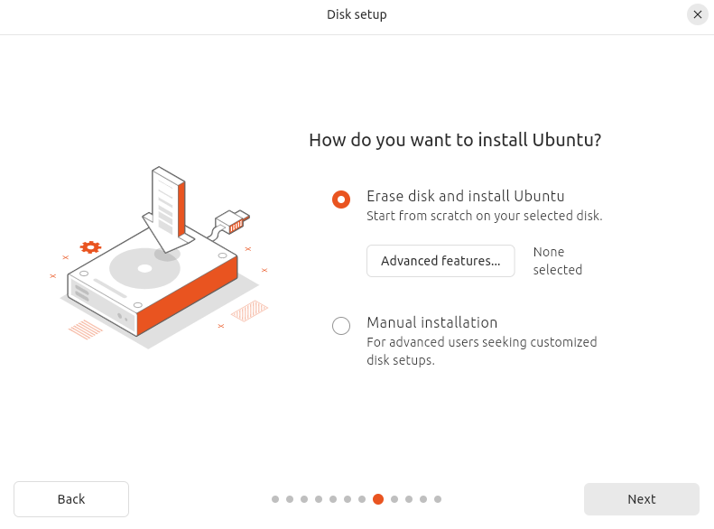
図10 インストール先の設定
ユーザ設定
PCを使用するユーザを設定します。お好きにどうぞ。(ただしパスワードは規定の通り)
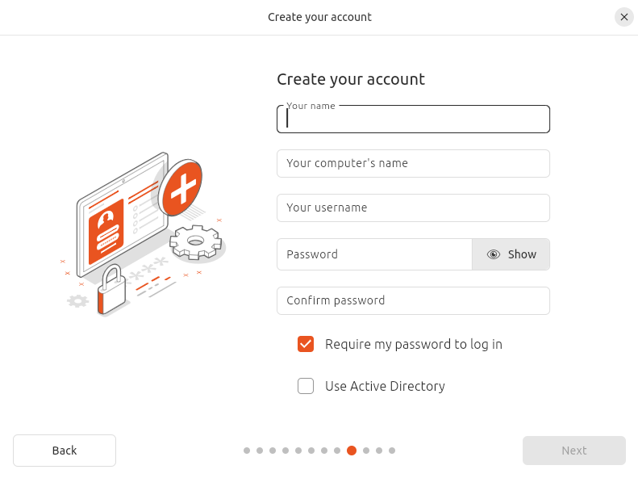
図11 ユーザ設定
地域設定
地域を設定します。大阪がないので東京を選択しています。(日本であればOK)
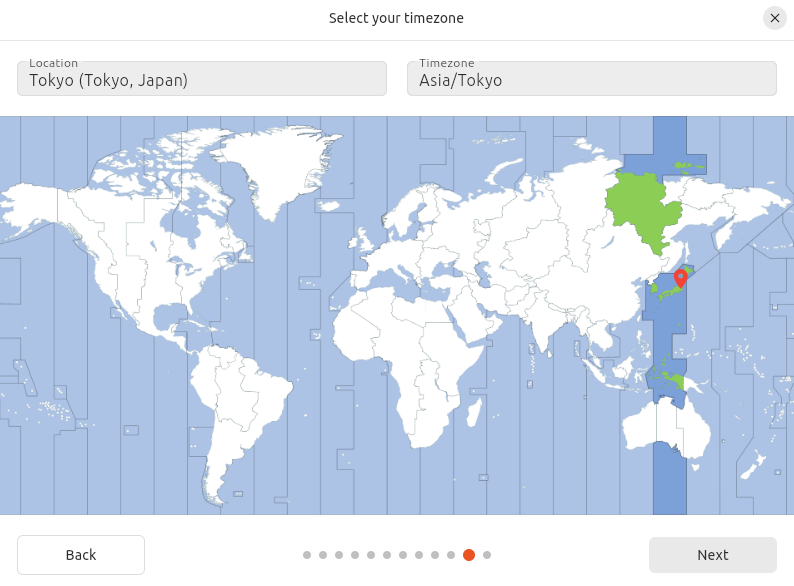
図12 地域設定
ここまで設定を行うと、あとは最終確認をするとファイルのコピーなどの作業が始まります。数十分はかかりますので気長に待ちましょう。
インストール終了後、再起動するとSSDからUbuntuが起動します。起動しますが、起動しません(何いってんだ...?)
これはGeforce RTX4060TiとUbuntuの相性が悪いために起こっているものです...この対応はPart3で行います。
お疲れ様でした。このファイルの内容は以上です。Part3に進んでください。